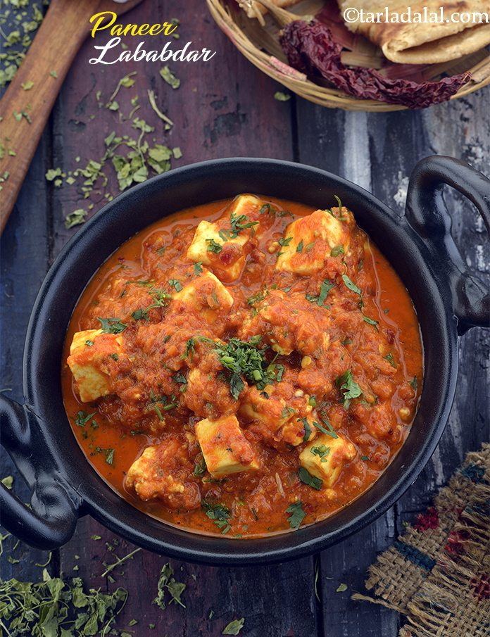

The best Punjabi shahi paneer recipe! Deliciously flavorful,
aromatic, rich, creamy, and restaurant-style paneer gravy. It will
surely become your new favorite paneer dish at home!
Paneer Labadar - Rs339

Paneer Lababdar is an easy-to-prepare, restaurant-style dish of paneer
(Indian cottage cheese) in a creamy, mildly tangy and faintly sweet gravy.
Onions, tomatoes, cashews and spices make this a rich, flavorful and delicious
recipe. This vegetarian Paneer Lababdar recipe is also naturally gluten-free.
Mushroom masala - Rs389
Mushroom Masala is a versatile dish that packs in a burst of flavors
from earthy mushrooms, tart tomatoes, and aromatic spices.
Paneer Tikka - Rs319
Paneer tikka or Paneer Soola or Chhena Soola is an Indian dish made
from chunks of paneer/ chhena marinated in spices and grilled in a tandoor.
It is a vegetarian alternative to chicken tikka and other meat dishes.
Mushroom Do Pyaza - Rs369
Mushroom do Pyaza is a flavourful, delicious semi-gravy prepared
by cooking mushroom in onion tomato-based gravy. Simple, light and super
delicious recipe.
Chilli Potato - Rs 279
Chilli potato is an Indo-Chinese fusion recipe, popular restaurant menu
as well as street food. Crispy fried potato, tossed in sauces.
Kashmiri Aloo Dum - Rs269
Kashmiri dum aloo is one of the most widely preferred north Indian curries.
Baby potatoes are deep fried and then cooked in delicious gravy of curd and lots of
spices like kashmiri red chillies, fennel powder, cardamom powder, cumin-coriander
powder, ginger, garlic etc.
Mix Veg - Rs249
Easy Mixed Vegetable Curry made with fresh vegetables in an onion tomato
gravy flavored with spices and herbs